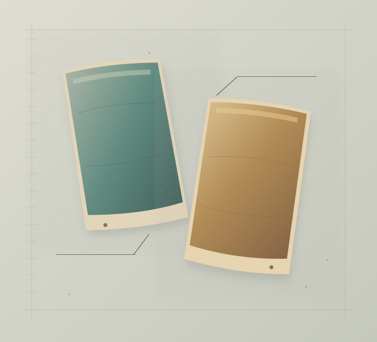

Material studies 01 / October 2026
The batch before the kiln
Four materials, counted in a hundred parts. Two small starting points for a studio notebook.
Read the two formulas
Clay no. 07 / ochreDrawn color studies
Original studio illustration
A notebook can begin before anything has been made. A name at the top of the page. Four materials beneath it. A few numbers that tell us how much of each belongs to the whole.
Here, Ash no. 03 and Clay no. 07 each add up to a hundred parts. The second gives ten fewer parts to feldspar and ten more to kaolin, with a smaller shift between silica and whiting. The exercise is to keep those relationships readable as the size of the batch changes.
The drawings give the entries a place on the page. Their colors are imagined; the formulas are fictional teaching entries. What the worksheet can show is the arithmetic—and the note you leave for yourself.